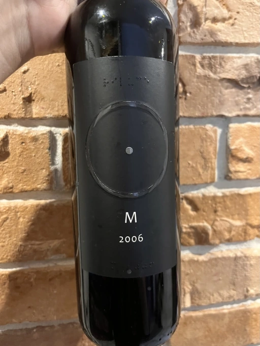

- Type
- Red Still, Dry
- Producer
- Cantina Alchemica
- Vintage
- 2006
- Location
- Italy, Vino (IT)
- Grapes
- Field Blend
- Alcohol
- 15
- Sugar
- NA
- Price
- 4900 UAH
- Cellar
- 1 bottle
Producer
A great wine realizes the taste of an experience not an experience of taste.
Proponent of biotic philosophy, e.g. biotic ethics.
Ratings
There are no ratings of this wine yet. It’s waiting for the right moment, which could be today, tomorrow or even in a year. Or maybe, I am drinking it at this moment… So stay tuned!